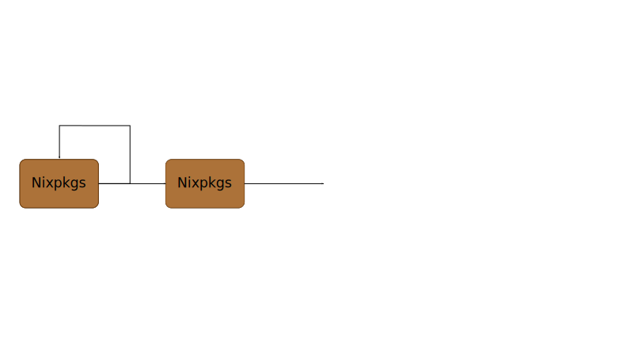
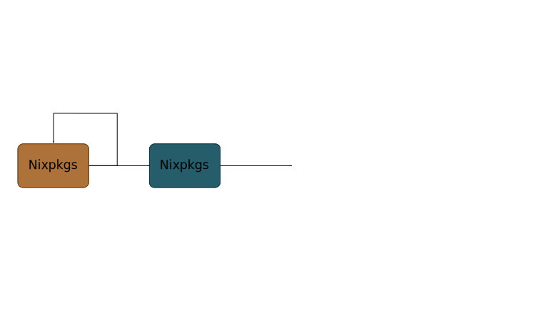
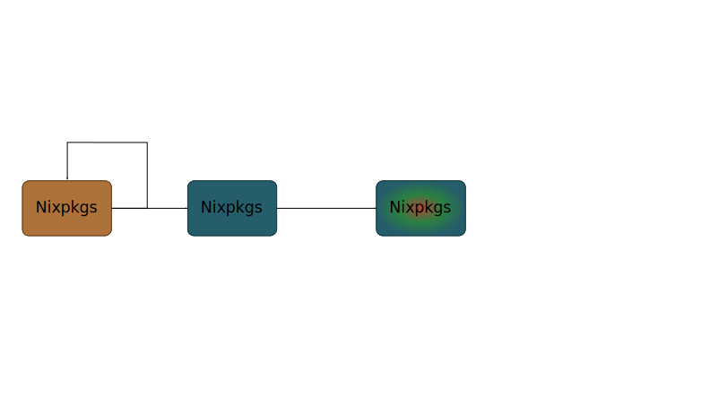
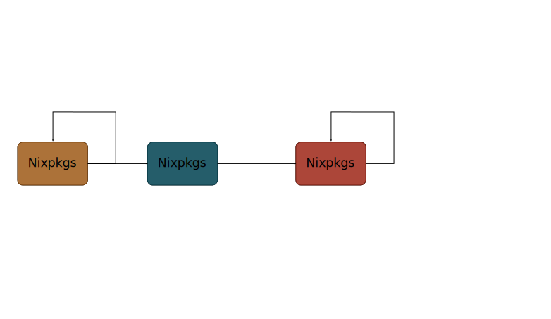
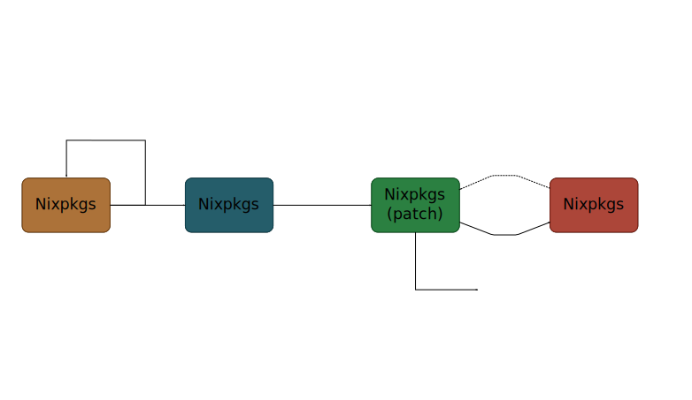

Nicolas B. Pierron
Exploits don't wait for updates:
Can we even trust software makers?
Exceptional implies stress, stress implies mistakes:
Make a process
Suggested ways:
pkgs.replaceDependency or
system.replaceRuntimeDependencies.Dear user, please proceed as follow:
system.replaceRuntimeDependencies = with pkgs; [
({ original = openssl;
replacement = callPackage /some/path/nixpkgs/pkgs/development/libraries/openssl {
fetchurl = fetchurlBoot;
cryptodevHeaders = linuxPackages.cryptodev.override {
fetchurl = fetchurlBoot;
onlyHeaders = true;
};
};
})
];Require:
Otherwise: Normal updates are shipped in a month.
Yes-ish
which means
No
Substitute references inside package outputs:
By order of importance:
$ nix-channel --update
$ nix-env -u firefox
Should become:
$ nix-channel --update
$ nix-env -u firefox$ nix-channel --update
$ nix-env -u firefox
Should become:
Break the critical path in parallel compilation.
Do not recompile when a dependency change.
Generate the same set of packages.
Generate the same set of packages with one extra no-op iteration.
Recompile fixed packages based on fixpoint of stable packages.
Partially recompile fixed packages based on fixed packages.
Entirelly recompile fixed packages based on fixed packages.
Use the recompiled-info as a hint for patching with dependencies.
3 lists of packages:
Packagers options:
On new stable channel update:
What is left for improvements: